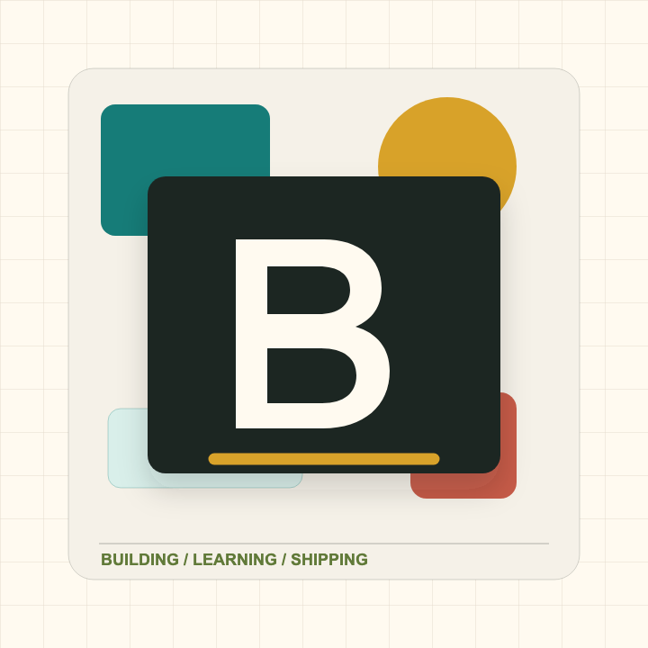

现在关注
Web、小工具、知识整理，以及把零散灵感变成可运行作品的过程。

About
Web、小工具、知识整理，以及把零散灵感变成可运行作品的过程。
这里会放项目入口、文章链接、实验记录，以及一个更容易被找到的联系位置。
先上线，再迭代。好的主页不必一次写完，它可以跟着人一起变化。
Selected work
用来收集学习记录、读书笔记和技术摘录，让长期积累更容易被重新找到。
查看 GitHub ->存放一些轻量工具和网页实验，优先做得能用、清楚、方便继续改。
查看 GitHub ->记录想法、项目复盘和阶段性总结，让作品之外也能留下清晰脉络。
查看 GitHub ->Contact